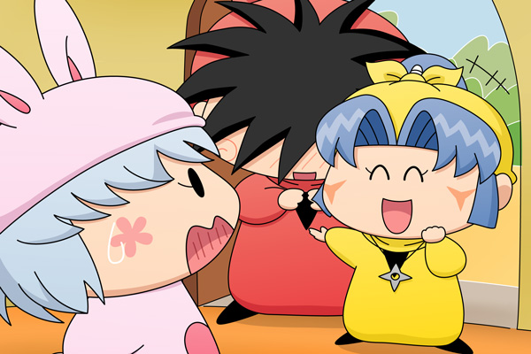

あれから１週間が過ぎました。
パピィ「あら、ヤマネたん！ どうちたの？・・・あっ」
パピィの家の扉を開けたのは、少し前に恋の相談でパピィの家にやってきたヤマネでした。今日は恥ずかしそうな表情をしているヤシチを引き連れて・・・。
パピィ「ヤマネたん、これってもちかちて・・・」
ヤマネ「はいっ！
この度はめでたくヤシチ兄様と恋の関係を持つことができました。
これもすべてパピィ殿のご指導のおかげでございます」
ヤマネはニコニコした表情で、うれしそうに答えます。
パピィ「ということはヤマネたんはヤシチたんと・・・」
ヤマネ「はい！ご指導の通りに接吻を・・・」
ヤシチ「うぅ・・・」
パピィ（何でちゅって～～っ。
あたちはまだムルモともキスちたことないのに～っ）
笑顔のヤマネ、恥ずかしそうなヤシチ、慌てるパピィ。
まさに三者三様というか、むしろ異様な光景ですね。

ヤマネ「せっかくでございますので、ヤシチ兄様からもパピィ殿に
挨拶をお願いしたいでございます」
ヤシチ「せ、拙者もするのか？」
ヤマネ「パピィ殿は恋の恩人でございますし・・・」
ヤシチ「えー、このたびはその・・・晴れた青空の下・・・（略）」
ヤマネ「ヤシチ兄様？」
ヤシチ「ええい！仕方ない！
拙者ヤシチはヤマネと正式にお付き合いすることになったのだ！」
ヤマネ「ヤシチ兄様！うふふのふ～」
そう言うと今度はヤマネの顔が赤くなりました。
パピィ「ヤシチたん、ヤマネたんの尻に早速敷かれているわね」
ヤマネちゃんの恋のストーリーはハッピーエンドで幕を閉じることができました。
幸せムードの二人を待ち受ける未来とは！？
第２部へ続く！？
最後の最後で時間がかかってしまい、３ヶ月ぶりの更新となってしまいました。その割りには波乱もなく終わってしまい申し訳ありませんm(_ _)m。だけどわがままで個性的な妖精の恋がずっとうまく行くなんてことはないはずなので、続編のストーリーはぜひ描いてみたいと思っています。その時はまたゆっくり気長に読んでみてくださいね。
(2010/5/27)